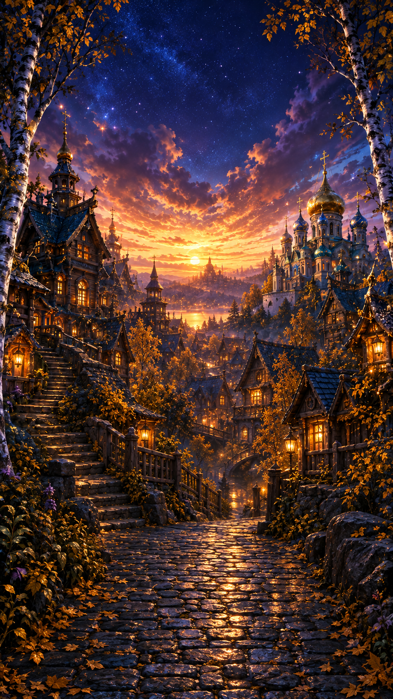
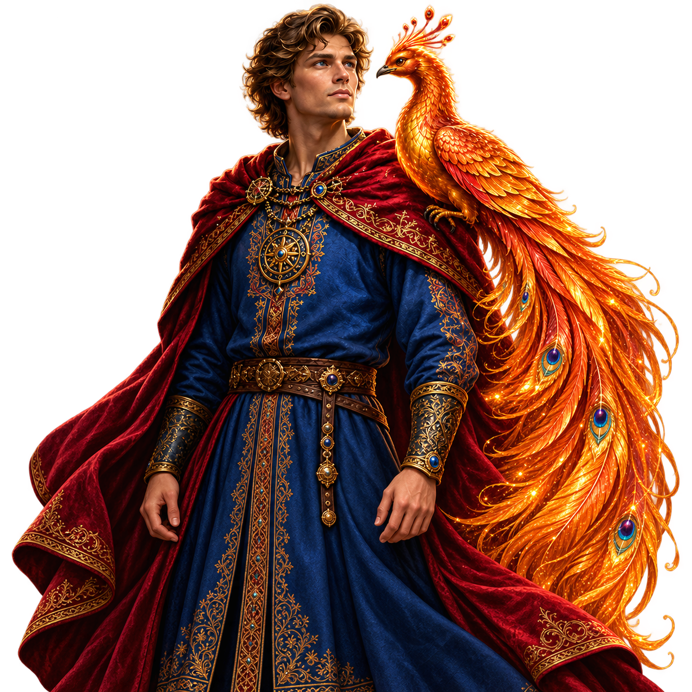
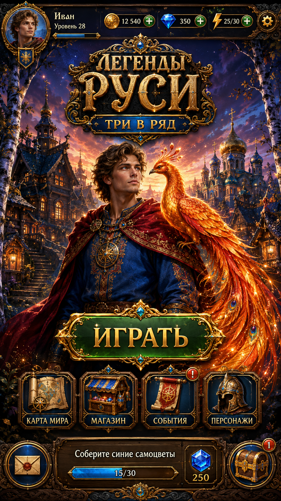

<!doctype html><meta charset="utf-8"><title>R6 source pose diagnostic</title><style>html,body{margin:0;background:#18232e;color:#f4e0b6;font:14px Arial,sans-serif;width:941px}header{height:66px;padding:10px;box-sizing:border-box;line-height:22px}main{width:941px;height:1672px;position:relative;overflow:hidden}img{position:absolute;display:block}.bg,.reference{left:0;top:0;width:941px;height:1672px}.hero{left:-20px;top:474px;width:967px;height:967px}body.ref .bg,body.ref .hero,body:not(.ref) .reference{display:none}</style><header>Home R6 — full-source background and hero placement diagnostic<br>Offline incomplete art composition only; not Unity, not implemented UI. Full PNGs displayed unchanged.</header><main></main><script>if(location.search.includes('reference'))document.body.className='ref';window.previewReady=Promise.all([...document.images].map(i=>i.decode()));</script>